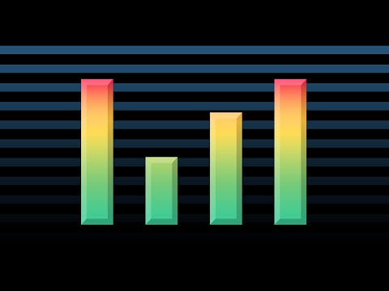

Película y Documentales
Blade Runner 2049

Descripción: sta película es la largamente demorada secuela de la película Blade Runner, la cual fue de por sí una adaptación bastante libre de la novela de Philip K. Dick Sueñan los androides con ovejas eléctricas. Novela y película exploran aspectos de la emoción y la relación entre las personas como reflejo de su humanidad. Este tema se despliega a través de la presencia de los replicantes, humanos mejorados creados artificialmente usados como mano de obra esclava en colonias planetarias. Los replicantes huidos son perseguidos por los blade runners, policías encargados de eliminarlos por estar prohibidos en la Tierra. La dialéctica entre varios replicantes en fuga y un blade runner que los persigue plantea quién es más humano de ambos. El énfasis de esta comparativa está en la memoria y su capacidad para crear empatía.
La secuela Blade Runner 2049 transcurre 30 años después de la primera. Continúa la trama siguiendo las consecuencias de los hechos finales de la primera película. De nuevo el planteamiento es la deshumanización de los humanos y la humanización de los (supuestamente) no humanos replicantes. En esta época los nuevos replicantes se ven obligados a obedecer por su “programación” y el protagonista es, simultáneamente, un blade runner que persigue replicantes antiguos huidos y un replicante moderno sujeto a la obediencia propia de su modelo.
Trackers: The Sound of 16-Bit
Descripción: Un tracker es un programa de computadora que se utiliza para crear música electrónica. Los trackers se originaron en la década de 1980 y se hicieron populares en la década de 1990. Los trackers son populares entre los músicos que crean música chiptune, que es un tipo de música electrónica que se caracteriza por su uso de sonidos simples y sintetizados. Los trackers también son populares entre los músicos que crean música demoscene, que es un tipo de música electrónica que se crea para ser exhibida en demos de videojuegos.
Las escenas warez y demo fueron dos comunidades importantes que ayudaron a popularizar el software de rastreo en la era de 16 bits. La escena warez era un grupo de personas que pirateaban software y lo distribuían en línea. Muchos de los primeros rastreadores fueron lanzados por grupos warez, lo que ayudó a difundir la palabra sobre el software de rastreo y hacerlo más accesible a los usuarios. La escena demo era un grupo de programadores y artistas que creaban programas cortos e interactivos que mostraban sus habilidades técnicas. Muchas de estas demostraciones fueron creadas utilizando software de rastreo, y ayudaron a demostrar el potencial de los rastreadores para crear música y visualizaciones de alta calidad. Las escenas warez y demo jugaron un papel importante en el desarrollo del software de rastreo. Ayudaron a popularizar el software de rastreo y también ayudaron a empujar los límites de lo que era posible con el software de rastreo. Sin las escenas warez y demo, el software de rastreo no podría haber sido tan exitoso como fue.